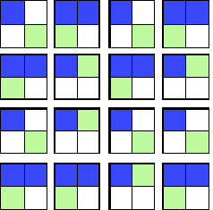
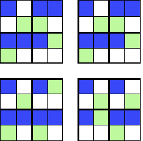
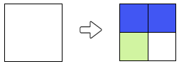

Solution
After the first coloring, the two boxes on the right half are colored green. To get the objective after the second coloring step, the coloring rule for a green square must match the pattern repeated twice on the right half of the objective. So let's fix the following coloring rule:

We then obtain the first half of the result :

In the same way, we can define the coloring rule of a blue box, by copying the repeating pattern twice on the left half of the objective.
In summary, we obtain the desired result with the following rules:

In the first step, we color a white square in 4 green or blue squares. To choose the color of the boxes, we must take into account the reasons visible in the objective: the top quarter on the left is identical to the quarter on the bottom right, and likewise the top quarter on the right is identical to the quarter at the bottom to the left. You have to reflect these symmetries in the coloring rule for a white square, for example like this :

We then obtain :

It remains to determine the rules for the second coloring step. The coloring rule for the green boxes must be used to obtain the pattern appearing in the top right quarter and the quarter bottom left of the objective.

We then obtain :

The coloring rule for the blue boxes must be used to obtain the pattern appearing in the other two quarters of the objective.
In summary, you can get the objective with the following rules :

Note that we can also succeed by inverting the colors in the first step; here is the alternative solution:

Observe the patterns formed by all squares of 4 squares that appear in the objective.

We see that there are 3 different types of patterns :

It will inevitably be necessary to use these reasons like rules of coloring. It remains to be seen which will correspond to each color.
To find the pattern that corresponds to the coloring rule for white, cut the objective into 4 squares (16 squares each) :

We can then observe that the two squares of the top are identical, while the two squares of the bottom both have different patterns.
We deduce that the rule of coloring white is, among the 3 patterns identified above, the one with the two upper squares of the same color.

Once we have found the first step, we have to use the other two patterns identified as coloring rules for green and blue. There are only two possibilities, which can be tested very quickly (or else we can think, but it takes more time here!).
In summary, the solution is :

It's informatics!